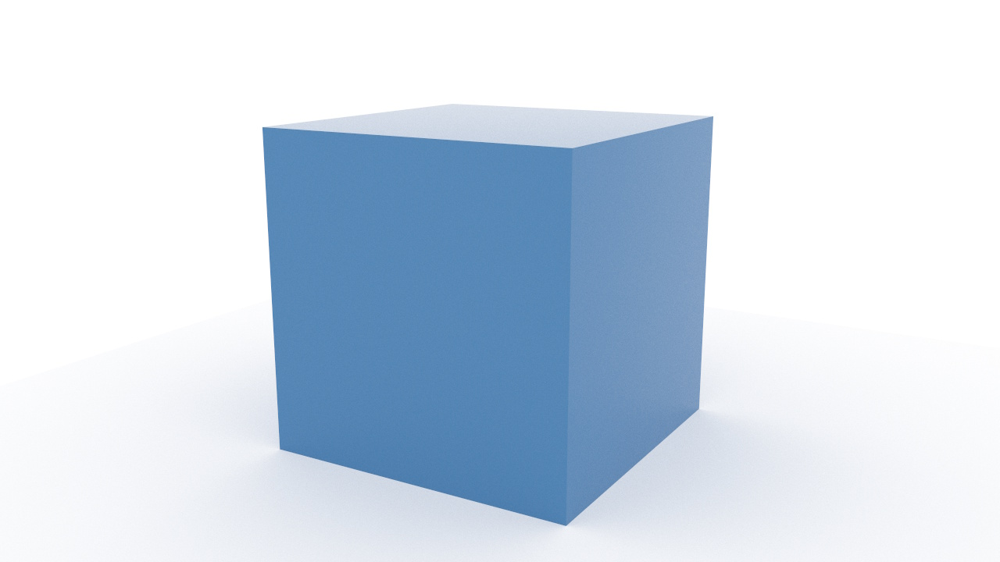

This builds on the Simple Client by adding an interactive camera that supports orbiting, panning, and zooming. The render loop runs continuously so the image updates as the user moves the camera.
To run this locally, make sure you have the prerequisites in place.
The differences from the simple client are:
AltAzimuthPerspectiveCamera and call copyFrom to initialize it from the
scene camerapointer and wheel events on the canvas to drive the cameracamera.update(), then renderer.copyCamera() to push the camera state
to the renderermaxSamples has been reached) when the user interacts with the camera

The canvas, imports, renderer, spec parsing, and scene loading steps are the same as the Simple Client. The differences start at creating the interactive camera.
AltAzimuthPerspectiveCamera is a perspective camera that
supports orbiting (altitude/azimuth rotation), panning, and zooming.
Create one with the canvas dimensions, then call copyFrom
to initialize it from the scene camera:
const camera = new Core.Cameras.AltAzimuthPerspectiveCamera({
width: canvas.width,
height: canvas.height,
});
camera.copyFrom(scene.camera);
copyFrom copies position, orientation, and
(for perspective cameras) fov, aperture, and
focusDistance. It clones vectors internally, so you don't
need to worry about shared references between the scene camera and the
interactive camera.
AltAzimuthPerspectiveCamera exposes three manipulation methods:
| Method | Action | Input |
|---|---|---|
camera.rotate(dx, dy) |
Orbit around the scene | Left-click drag |
camera.translate(dx, dy) |
Pan the camera | Right-click drag, or Shift + left-click drag |
camera.zoomWheel(deltaY, x, y) |
Zoom toward the pointer position | Mouse wheel |
Wire them up using standard pointer and wheel events:
let pointerDown = false;
let pointerButton = 0;
let lastX = 0;
let lastY = 0;
canvas.addEventListener('pointerdown', (e) => {
pointerDown = true;
pointerButton = e.button;
lastX = e.clientX;
lastY = e.clientY;
canvas.setPointerCapture(e.pointerId);
});
canvas.addEventListener('pointermove', (e) => {
if (!pointerDown) return;
const dx = e.clientX - lastX;
const dy = e.clientY - lastY;
lastX = e.clientX;
lastY = e.clientY;
if (pointerButton === 2 || e.shiftKey) {
camera.translate(dx, dy);
} else {
camera.rotate(dx, dy);
}
startLoop();
});
canvas.addEventListener('pointerup', () => { pointerDown = false; });
canvas.addEventListener('contextmenu', (e) => { if (running) e.preventDefault(); });
canvas.addEventListener('wheel', (e) => {
e.preventDefault();
camera.zoomWheel(e.deltaY, e.offsetX, e.offsetY);
startLoop();
}, { passive: false });
setPointerCapture ensures drag events continue even when
the pointer leaves the canvas. The contextmenu handler
prevents the browser menu from appearing on right-click while the
renderer is running; when stopped, right-click opens the browser menu
(e.g. to save the image). Each interaction calls startLoop()
to resume rendering if it has stopped.
Each frame, call camera.update() to apply pending
manipulations, then call renderer.copyCamera() to push
the camera state to the renderer:
const maxSamples = 1000;
let running = false;
let previousTime = performance.now();
function startLoop() {
if (running) return;
running = true;
previousTime = performance.now();
renderer.frameCount = 0;
requestAnimationFrame(tick);
}
function tick(currentTime) {
const elapsed = currentTime - previousTime;
previousTime = currentTime;
camera.update(elapsed);
renderer.copyCamera(camera);
renderer.updateAsync(elapsed);
renderer.renderAsync(elapsed);
if (renderer.frameCount < maxSamples) {
requestAnimationFrame(tick);
} else {
running = false;
}
}
startLoop();
The loop stops after maxSamples frames. When the user
interacts with the camera, startLoop() resets the frame
count and resumes rendering. Each camera move causes the image to
re-converge from scratch.